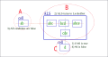
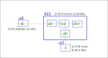
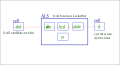
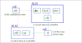
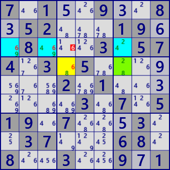
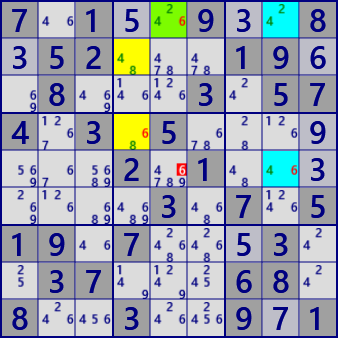
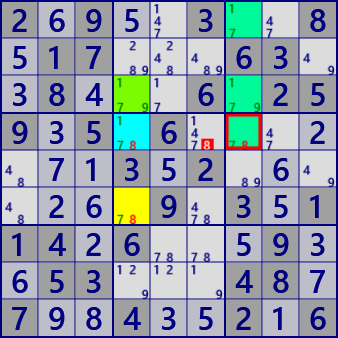
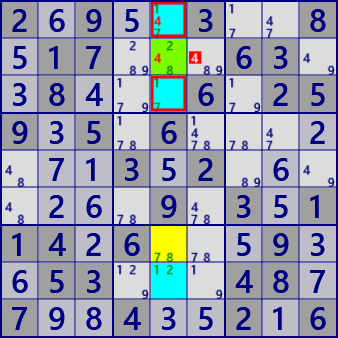

ALS-Wing
ALS-Wing is an extension of XY-Wing and DeathBlossom, and is an algorithm that uses the effect of ALS spreading when it becomes a LockedSet.
- Expanding XY-Wing bivalue cells to ALS => DeathBlossom
- Connection with stem cells and overlap with ALS possible => DeathBlossomEx
- Extending the effect of weak links to Stem Cells => ALS-Wing
GNPX uses logical operations based on bit representation.
The ALS-Wing "lockedSet" is explained in the following diagram.
Focus on a cell (stem cell) and select the ALS connected to the cell (weak link).
Next, select cell #digit(fake cell digit) to change ALS to LockedSet.
- [C]If cell#digit is true,
- [B]ALS changes to LockedSet,
- If the effect of LockedSet [B->A] is that all the candidate digits in cell [A] are negative,
(The effect of a weak link from B to A may be multiple #digits.) - [C]Cell #digit is not true.

The basic form of ALS-Wing is shown here, and can be extended as follows. These are independent and can be extended simultaneously.
- The fake cell digit and the Stem-cell digits are a weak link.[connected type]
- It consists of multiple ALSs that are weakly linked to the Stem-cell.
- There is overlap between multiple ALS types[overlapping type]



●ALS-Wing examole

ALS_WingStem Cell: r4c7
ALS_1: r4c4 #68
ALS_2: r3c137 #2469
Eliminated: r3c4 #6

ALS_Wing ConnectedStem Cell: r2c6
ALS_1: r346c4 #1789
ALS_2: r1238c5 #12478
Eliminated: r2c4 #8

ALS_Wing overlappingStem Cell: r3c4
ALS_1: r6c4 #78
ALS_2: r4c47 #178
ALS_3: r134c7 #1789
(ALS overlapping cells: r4c7)
Eliminated: r4c6 #8

ALS_Wing Connected overlappingStem Cell: r2c5
ALS_1: r137c5 #1478
ALS_2: r138c5 #1247
(ALS overlapping cells: r13c5)
Eliminated: r2c6 #4
7.1..9..8.52...19..8...3.574.3.5.......2.1.......3.7.519.7...3..37...68.8..3..9.1
2.9..3..8.17...63..8...6.259.5.6.......3.2.......9.3.114.6...9..53...48.7..4..2.6